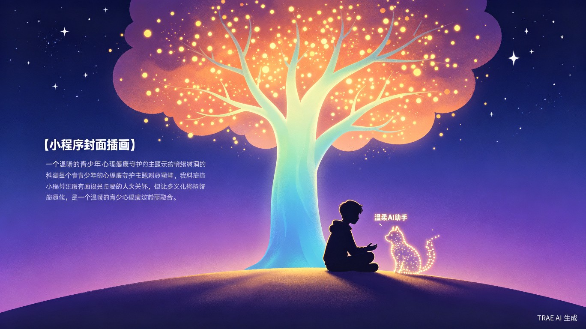
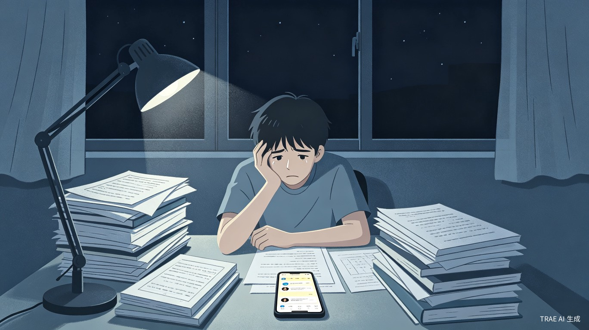
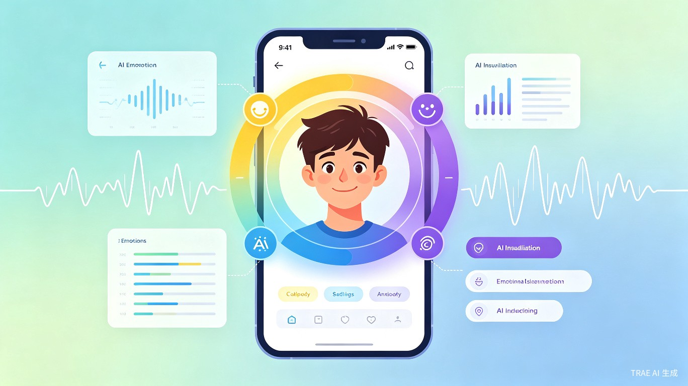
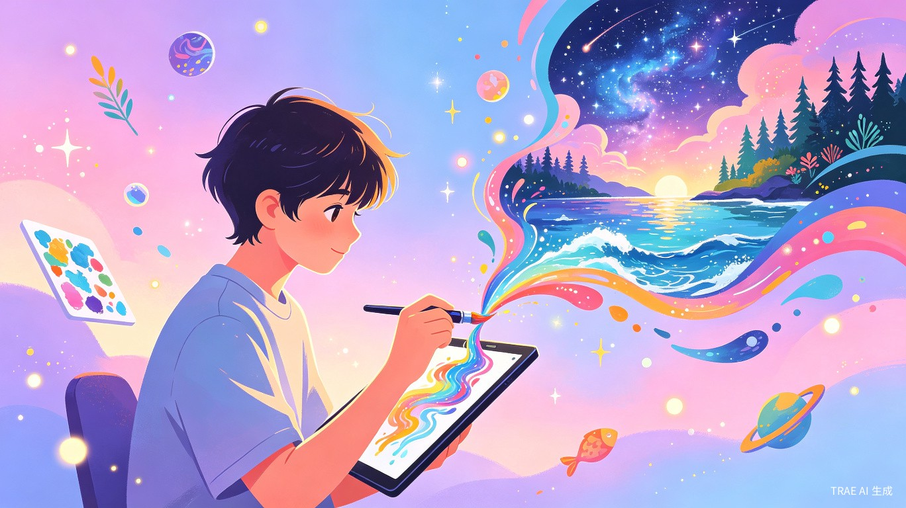
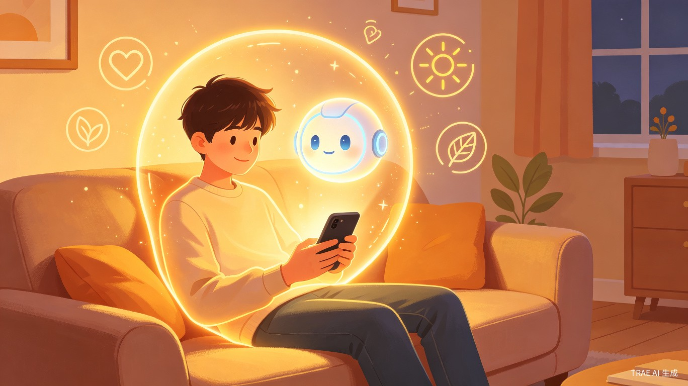

情绪树洞AI
青少年心理健康守护小程序
基于大语言模型的7x24小时AI心理陪伴与情绪疏导服务
为什么我们需要情绪树洞AI？
当前青少年面临学业压力、社交焦虑、家庭沟通等多重心理挑战，但专业心理咨询资源稀缺且门槛高。
灵感来源于"心岛日记"等产品的成功实践——它通过AI美术引擎帮助用户回溯人生遗憾、治愈情绪，注册用户已突破200万。同时，看到身边许多同学在遇到情绪困扰时，宁愿在社交媒体上匿名倾诉，也不愿寻求专业帮助，这让我意识到：青少年需要的不是冷冰冰的诊断，而是一个随时在线、安全私密、能理解共情的AI伙伴。

深夜的孤独与焦虑
当考试压力、人际矛盾、自我怀疑袭来时，许多青少年选择独自承受
三大核心能力，全方位守护心灵
融合情绪识别、认知行为疗法（CBT）对话、AI绘画疗愈三大核心功能
AI情绪识别
基于自然语言处理和面部表情分析，实时识别用户情绪状态。通过对话内容、语音语调、表情变化等多维度数据，精准判断焦虑、抑郁、愤怒等情绪倾向，为后续干预提供数据支撑。
CBT认知行为疗法对话
由专业心理咨询师参与训练的AI对话系统，运用认知重构、行为激活、正念引导等CBT核心技术。帮助用户识别负面思维模式，建立积极的认知框架，提供个性化的心理疏导方案。
AI绘画疗愈
用户通过文字描述内心感受，AI生成对应的艺术画作。将抽象的情绪转化为可视化的图像，帮助用户外化内心体验、获得新的视角。支持画作保存、分享和情绪日记关联。


AI绘画疗愈：用色彩治愈心灵
将内心感受转化为独特的艺术作品，在创作中实现自我疗愈
我们为谁而做？
精准定位12-18岁青少年群体，深入理解他们的真实困境
🎓 初高中学生（12-18岁）
面临升学压力、同伴关系、自我认同等典型青春期困扰，是最核心的服务对象。
🏫 大学生群体
面临学业转型、职业规划、人际重构等新挑战，需要持续的心理支持。
👨👩👧👦 家长用户
关心孩子心理健康但缺乏专业知识和沟通技巧，需要科学指导。
四大核心痛点
专业资源稀缺
学校心理老师配比严重不足（通常1:3000），预约排队周期长，无法满足学生即时需求。
求助门槛高昂
面对面咨询费用昂贵（300-800元/小时），且青少年对"看心理医生"存在病耻感，不愿主动求助。
现有工具冰冷
市面上的心理测评多为标准化问卷，缺乏个性化互动和持续陪伴，无法建立深度信任关系。
社交倾诉风险
在朋友圈/微博倾诉可能引发二次伤害或隐私泄露，缺乏安全私密的情绪宣泄渠道。
深夜因考试焦虑失眠，想找人倾诉却怕打扰朋友
与父母发生争吵后，需要情绪宣泄和理性复盘
感到孤独抑郁时，想要被"看见"和"理解"
面临重大选择时，需要梳理内心真实想法
科技向善，守护每一颗年轻的心
不仅是产品，更是一项具有深远社会意义的心理健康普惠工程

温暖的AI陪伴，安全的情绪港湾
随时随地，有一个理解你、接纳你的AI伙伴在身边
🌍 填补心理健康服务鸿沟
利用AI技术将专业心理疏导能力"普惠化"，让每个孩子都能免费获得基础心理支持，助力"健康中国2030"青少年心理健康目标。
- 打破地域限制，偏远地区学生也能获得服务
- 零费用门槛，消除经济障碍
- 7x24小时在线，消除时间限制
💡 预防优于干预
通过日常情绪记录和早期预警机制，在心理问题萌芽阶段及时介入，避免发展为严重心理疾病。
- 持续情绪追踪，发现异常波动
- 智能风险评估，主动预警提示
- 及时转介机制，连接专业资源
🤝 科技向善实践
参考"心岛日记"的AI治愈路径，让技术回归人文关怀，而非单纯效率工具。
- AI共情对话，理解而非评判
- 艺术表达疗愈，释放内在情绪
- 隐私保护设计，建立安全信任
⚡ 即时响应与个性化
AI对话响应速度小于2秒，解决"想倾诉时找不到人"的即时性需求。
- 基于用户情绪档案，自动生成定制化CBT练习
- 冥想引导、呼吸训练等个性化内容推荐
- 为家长和老师提供"情绪趋势报告"
📈 辅助专业决策
为家长和老师提供"情绪趋势报告"，帮助识别需要人工干预的高风险个案。
- 可视化情绪数据，直观了解心理状态
- 风险分级预警，精准识别高危个体
- 科学干预建议，提升家校协同效率
💪 降低病耻感
以"树洞"而非"诊疗"的定位，让青少年在无压力环境中获得心理支持。
- 匿名使用，保护隐私
- 游戏化设计，降低使用门槛
- 同伴支持社区，减少孤独感
用数据说话
青少年心理健康现状与产品价值的数据支撑
不是替代，而是补充与桥梁
情绪树洞AI的定位是专业心理咨询的有效补充，而非替代
传统心理咨询
专业深度高
费用昂贵
预约周期长
病耻感强
情绪树洞AI
即时响应
免费普惠
隐私安全
无门槛陪伴
来自内测用户的真实反馈
每一份反馈都是我们前进的动力
让每一颗心都被温柔以待
从工具到伙伴，从服务到生态
短期目标
完成小程序MVP开发，在3所中学试点，验证产品核心价值，收集用户反馈迭代优化。
中期目标
覆盖100所学校，服务10万+青少年用户，建立与专业心理咨询机构的转介合作网络。
长期愿景
成为中国青少年心理健康领域的标杆产品，推动AI心理服务行业标准建立，让科技真正向善。